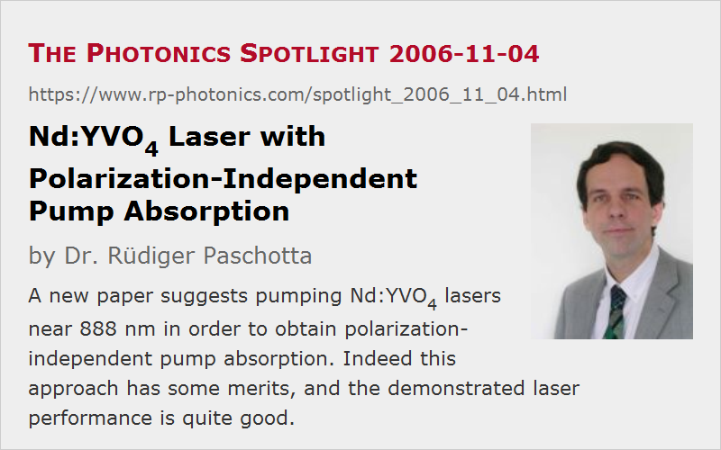

Nd:YVO4 Laser with Polarization-Independent Pump Absorption
Posted on 2006-11-04 as a part of the Photonics Spotlight (available as e-mail newsletter!)
Permanent link: https://www.rp-photonics.com/spotlight_2006_11_04.html
Author: Dr. Rüdiger Paschotta, RP Photonics Consulting GmbH
Abstract: A new paper suggests pumping Nd:YVO4 lasers near 888 nm in order to obtain polarization-independent pump absorption. Indeed this approach has some merits, and the demonstrated laser performance is quite good.

Ref.: L. McDonagh et al., “High-efficiency 60 W TEM00 Nd:YVO4 oscillator pumped at 888 nm”, Opt. Lett. 31 (22), 3297 (2006)
When a Nd:YVO4 laser (neodymium vanadate laser) is pumped with a fiber-coupled high power diode laser, the strongly polarization-dependent absorption cross sections can cause problems: while the pump light polarized in one direction is strongly absorbed within a short length of the crystal, light with the other polarization direction penetrates much deeper. Therefore, one will either have a strong thermal load on the input face or incomplete pump absorption. Also, any drifts of the polarization changes in the delivery fiber translate into a modified absorption efficiency and output power. A recent paper (see the reference above) has shown a way to eliminate this problem: pumping near 888 nm, where the pump absorption is about the same for both polarization directions. The demonstrated laser setup appears to work very well indeed, with 60 W output power in a diffraction-limited beam and a high optical-to-optical efficiency of 55%.
The fact that the pump absorption cross sections for 888 nm are relatively small (compared to those e.g. at 808 nm) is not necessarily a problem: they are still large enough for sufficiently efficient pump absorption with a moderate doping concentration. It can even be beneficial for various reasons to avoid the very strong absorption as is obtained at 808 nm. A possible caveat, however, is that the balance of cross sections for the two polarization directions is strongly dependent on the wavelength, and in facts varies quite a lot within the typical bandwidth of a diode laser, being a few nanometers. Even though the effective absorption efficiency for pump beams with finite bandwidth is not strongly dependent on the center wavelength, as shown by the authors in Fig. 3, the distribution of absorbed power in the crystal might be significantly affected: a part of the light can be strongly absorbed near the input face, while other light is weakly absorbed and partly lost. Therefore, polarization changes may cause changes in the absorbed power distribution, even though the total absorbed power may not vary a lot.
By the way, nearly polarization-independent pump absorption could also be achieved near 820 nm, i.e., in the longer-wavelength wing of the most often used 808-nm absorption feature. However, the lower quantum defect at 888 nm is also advantageous.
This article is a posting of the Photonics Spotlight, authored by Dr. Rüdiger Paschotta. You may link to this page and cite it, because its location is permanent. See also the RP Photonics Encyclopedia.
Note that you can also receive the articles in the form of a newsletter or with an RSS feed.
Questions and Comments from Users
Here you can submit questions and comments. As far as they get accepted by the author, they will appear above this paragraph together with the author’s answer. The author will decide on acceptance based on certain criteria. Essentially, the issue must be of sufficiently broad interest.
Please do not enter personal data here; we would otherwise delete it soon. (See also our privacy declaration.) If you wish to receive personal feedback or consultancy from the author, please contact him e.g. via e-mail.
By submitting the information, you give your consent to the potential publication of your inputs on our website according to our rules. (If you later retract your consent, we will delete those inputs.) As your inputs are first reviewed by the author, they may be published with some delay.
|  |
If you like this page, please share the link with your friends and colleagues, e.g. via social media:
These sharing buttons are implemented in a privacy-friendly way!